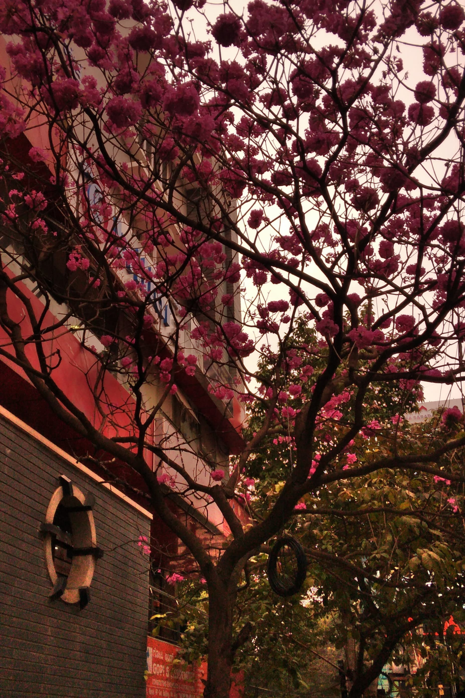
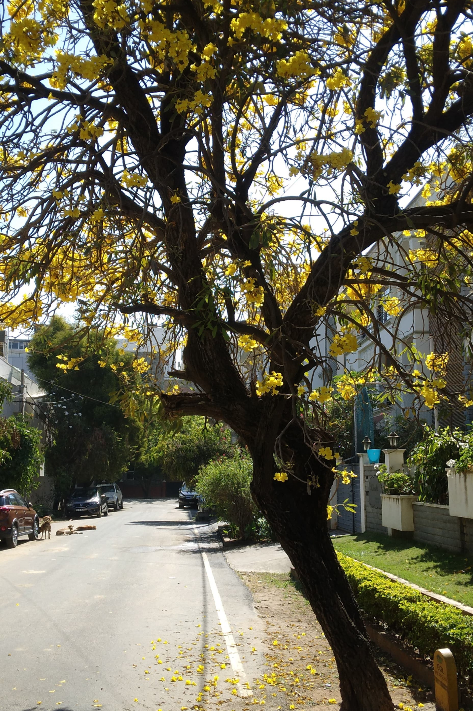
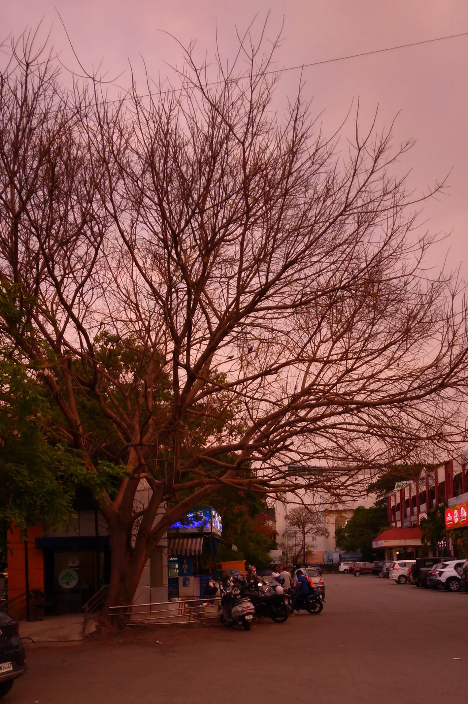
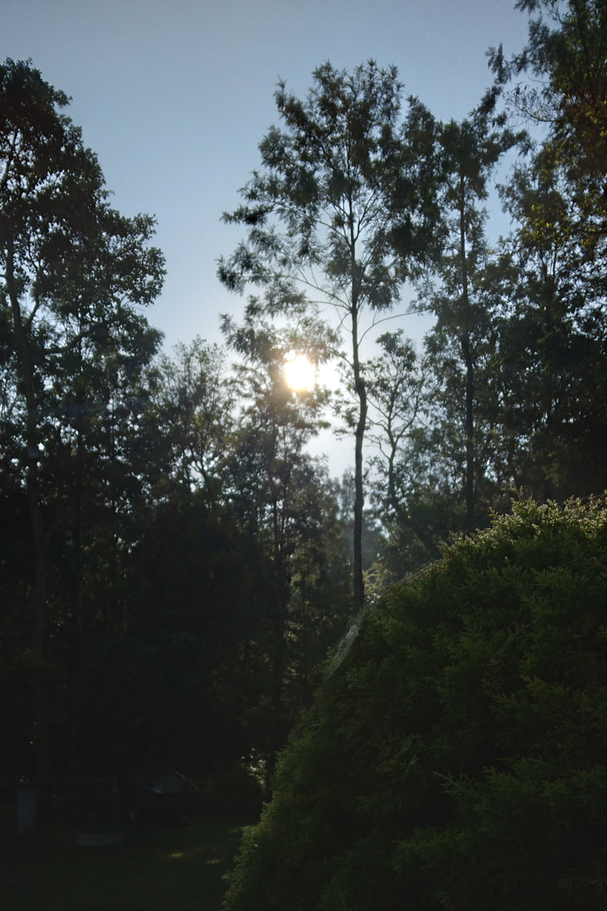
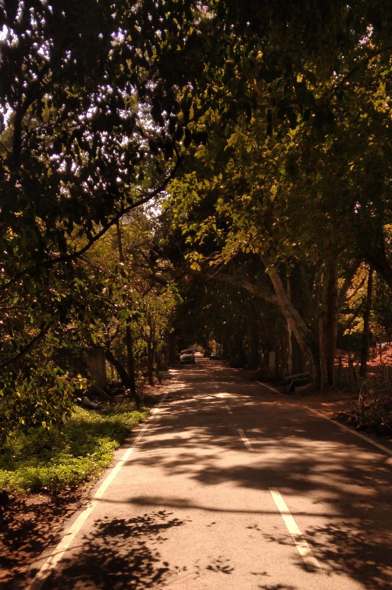
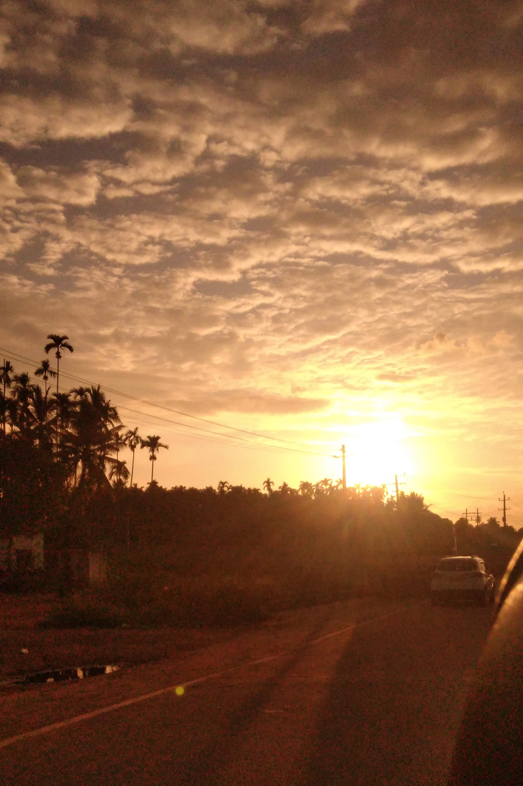

I am a UI/UX Designer working on the E-commerce, Logistics and
payment products at faarms, completed my computer application in
2020.
I started out working on mobile development at my college
but fascinated by the project planning and why behind the
development, which led me to explore the UX field after working
as an inter and doing some projects, which interested me to
choose a career in UX Design.
Photography





